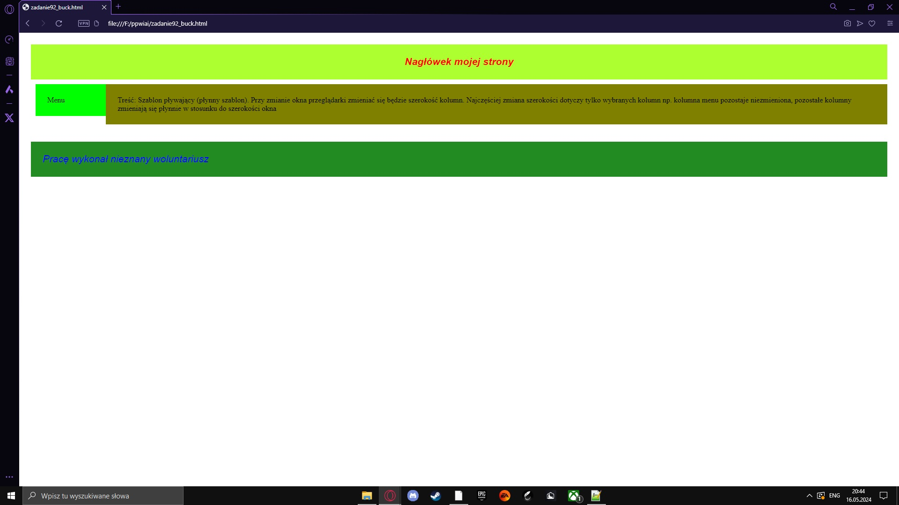
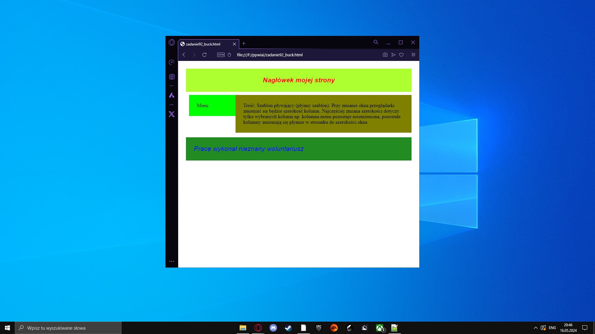

<center>
<textarea rows="75" cols="110">
<!DOCTYPE html>
<html>
 <head>
 <style type="text/css"> /* początek def CSS */
 * { margin: 0px; padding: 0px;} /* zerowanie styli */
 div {overflow: hidden; padding: 25px; }
/* overflow: hidden --> ukrywanie tekstu wychodzącego poza granice elementu */
/* padding: 25px; --> wewnętrzny margines o rozmiarze 25px*/
 #ramka { /* definicja elementu ID o nazwie ramka*/
 margin-right: auto; /* auto -->margin wyśrodkowanie */
 margin-left: auto; /* auto -->margin wyśrodkowanie */
 min-width: 400px; /* minimalna szer strony-->400px */
 max_width: 900px;/* maksymalna szer strony-->900px */
}
 #menu_prawe_bucki {
    background-color: #90ee90;
    color: red;
    font-size: 0.5cm;
}
 #naglowek {
 background-color: #adff2f;
/* kolor tła w HEX na #adff2f; */
 font-size:16pt;
/* wielkość czcionki na 16pt */
 color:red;
/* kolor czcionki: czerwony */
 font-family: Arial;
/* rodzina: Arial */
 font-style: italic;
/* styl: kursywa */
 text-align: center;
/* wyśrodkowanie tekstu */
 font-weight:bold;
/* grubość tekstu */
 }
 #stopka {
 background-color: #228b22;
 font-size:16pt; 
  color:blue;
 font-family: Arial;
 font-style: italic;
 clear:both;
/* clear-przyleganie elementów, both-pierwotne, blokowe opływanie */
 }
.kolumny {/*klasa kolumny*/
 margin-top: 10px; /* margines, 10px od góry */
 margin-bottom: 2%; /* margines, 2% całego elementu od dołu */
 margin-left: 10px; /* margines, 10px od lewej strony */
 background-color: #0f0;
 }
 #kol1 {
 float: left; /* opływanie do lewej strony dla każdego kolejnego bolku */
 width:100px;
 }
 #kol2 {
 background-color:#808000;
 }
/* identyfikator kol2*/
</style>
 </head>
<body>
 <div id="ramka">
 <div id="naglowek">Nagłówek mojej strony </div>
 <div class="kolumny" id="kol1"><p>Menu</p> </div>	
 <div class="kolumny" id="kol2"><p>Treść: Szablon pływający (płynny szablon). Przy zmianie okna przeglądarki zmieniać się będzie szerokość kolumn. Najczęściej zmiana szerokości dotyczy tylko wybranych kolumn np. kolumna menu pozostaje niezmieniona, pozostałe kolumny zmieniają się płynnie w stosunku do szerokości okna</p>Tekst definicja: szablonu pływającego<br></div>
 <div class="kolumny" id="menu_prawe_bucki"><p>Bucki</p></div>
 <div id="stopka">Pracę wykonał nieznany woluntariusz</div>
</body>
</html>
</textarea>
</center>